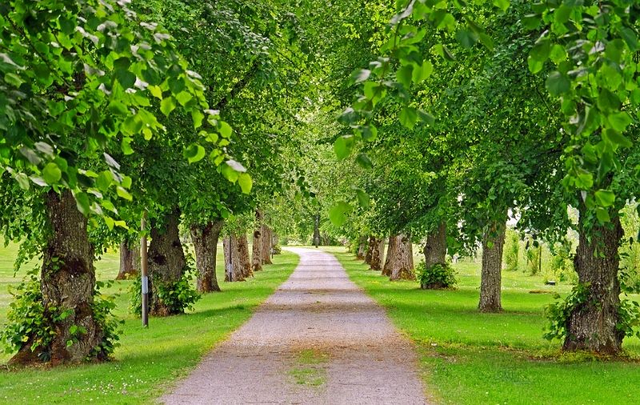

Você é Léo, o jovem Guardião da Floresta Sussurrante. Ao seu lado está Pip, seu fiel companheiro, um pequeno e corajoso esquilo voador. Hoje, a floresta está em perigo. A Árvore Anciã, o coração de toda a vida, está perdendo seu brilho mágico. A única esperança é encontrar a lendária Semente de Luz para restaurar seu poder.
Seu mapa antigo revela o ponto de partida. À sua frente, a jornada se divide.